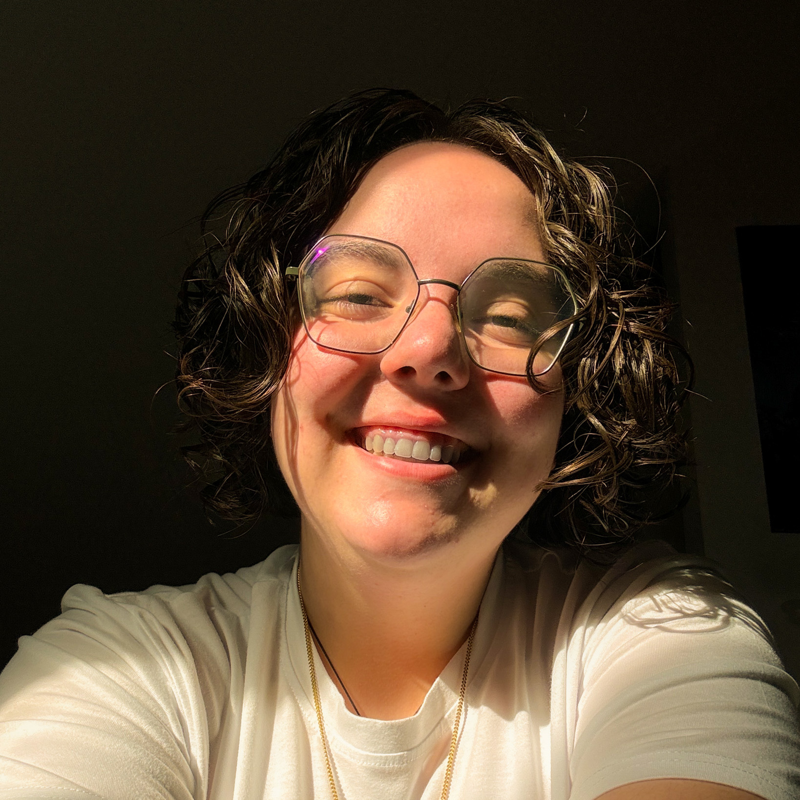

Hallo, ik ben
Fien Wouters
UX & UI Designer
Een enthousiaste UX & UI Designer met een passie voor gebruiksvriendelijke en visueel sterke digitale ervaringen. Met oog voor detail en een creatieve aanpak breng ik ideeën tot leven in designs die zowel esthetisch als functioneel zijn.


